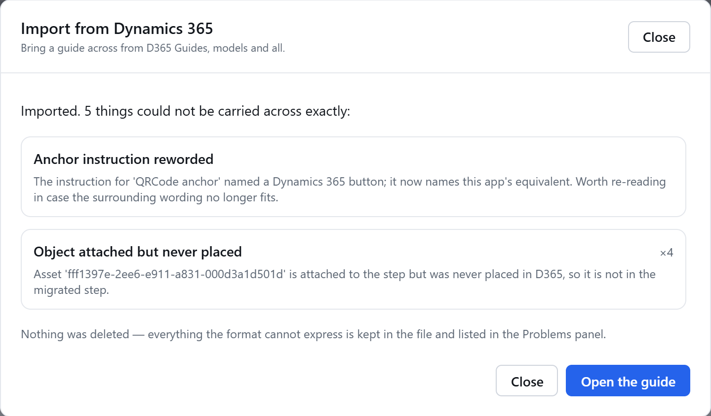

Cloud
- Fully managed and kept up to date
- Nothing to install
- Your own private workspace
Best for: fast starts
D365 Guides support ends 31 Dec 2026 Plan your move
Guide Shift carries your procedures and remote-support workflows to a platform that is maintained, multi-device and backed by a dedicated engineering and 3D team.

Bring existing guides over at no charge.
Quest 3, HoloLens 2, PICO 4 Enterprise.
Cloud-hosted or fully on-premises.
Engineers, 3D artists and domain experts.
The situation
Dynamics 365 Guides is reaching end of support while HoloLens 2 is no longer being sold. Operations that depend on guided work need a platform that keeps moving.
Years of authored procedures are an asset. Migration keeps them.
Run the same guide on the headset that suits each site.
Choose hosting that matches your security policy.
Add 3D content, VR training and analytics over time.
How it works
We review your guide library, devices and hosting needs and agree a plan.
Upload the .guide files, read the report, and polish content in the studio or have our team do it.
Roll out to headsets site by site while current work continues uninterrupted.
Only the exported files are needed, never your Microsoft login.

The platform

What carries over
| In Dynamics 365 | In Guide Shift | What changes |
|---|---|---|
| Guides and content | Imported guides | Nothing to rebuild |
| PC authoring app | Browser studio | No installation |
| HoloLens operator app | Guide Player | Also on Quest 3 and PICO 4 |
| Spatial anchors | Printable QR codes | Cheaper to place and replace |
| Remote Assist | Remote Assist on Quest 3 | Same idea, newer hardware |
| Dataverse environment | Your own workspace | Cloud or on-premises |
| Product roadmap | Active development | Support ends 31 Dec 2026 for D365 Guides |
Deployment options
Same product either way. Choose cloud or on-premises.
Both: Open formats, no lock-inOffline playback
Where it is used
Assembly and quality checks
Inspection and repair
Safety-critical routines
Technical courses
Emergency procedures
FAQ
Export them from Dynamics 365 as .guide files and upload them to the studio. You receive an import report that lists anything needing review. We never ask for your Microsoft credentials.
The import itself is quick. The overall timeline depends on how many guides you have and how much you want refined. We scope it in a short assessment and give you a written plan.
Nothing is deleted. Items that cannot be reproduced exactly are flagged in the report, and our team resolves them with you.
Meta Quest 3, HoloLens 2 and PICO 4 Enterprise. Existing HoloLens 2 devices stay in service.
They travel with the guide. Where a model needs optimising for another headset, our 3D artists handle it.
The engineers, 3D artists and domain specialists who build Guide Shift. You work with one accountable team rather than a ticket queue.
Yes. We design and build VR training, 3D assets and complete guide libraries as a service, alongside the platform.
By users, devices and hosting model. Development, 3D and subject-matter work all happen in-house, which keeps quotes competitive. Email us for a quote.
Contact